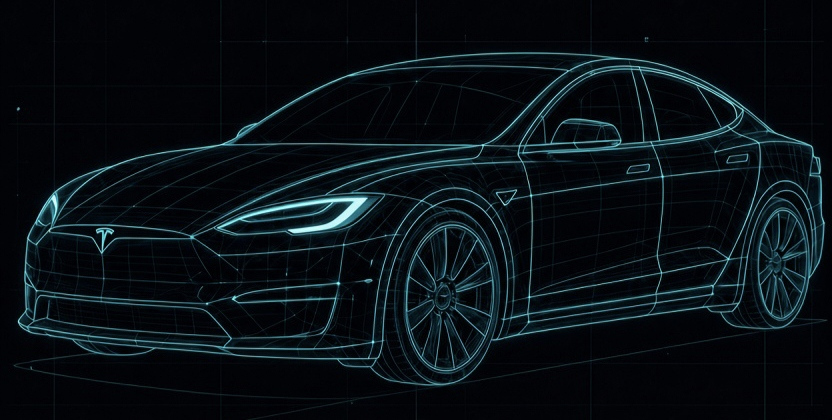

VEHICLE TECHNICAL SUPPORT
车辆技术支持学习台
围绕远程诊断岗位组织知识，不按学科堆概念。每个板块都回答三个问题：系统怎样工作、怎样失效、怎样用证据定位。
目标：建立系统级诊断能力
理解控制器的供电、输入、输出和通信依赖；结合 DTC、实时数据、波形与软件版本，将故障定位到供电接地、线束通信、硬件或软件层。
DIAGNOSTIC PRINCIPLE先验证基础条件
再判断模块本体
再判断模块本体
SYSTEM MAP / BEV
从一辆车开始理解整车系统
电池、低压电气、控制器、车载网络与诊断方法，都在同一张系统地图里。

2D 参考图 · 3D 模型待加载3D model: Tesla 2018 Model 3 by Ameer Studio, licensed under CC BY 4.0.
车载网络
理解控制器怎样通信，以及网络故障怎样表现。
CAN / CAN-FDLINUDS网关
→02
整车电气与低压电路
从 12V、保险丝、继电器、搭铁到高压使能链。
12V / DC-DC供电与接地线束HVIL
→03
车辆机电系统
按车身、底盘、动力和热管理理解输入、控制与执行。
车身域底盘域动力域热管理
→04
软件、OTA 与 ECU 刷写
理解安全部署、版本依赖和刷写失败的恢复路径。
UDS FlashOTA版本依赖回滚
→05
系统级诊断方法
用现象、DTC、数据流和测试结果建立证据链。
故障分层偶发 / 持续执行器测试根因验证
→
统一诊断路径
确认现象→读取 DTC→查看实时数据→验证供电 / 接地→检查通信 / 线束→区分硬件与软件→修复后复测